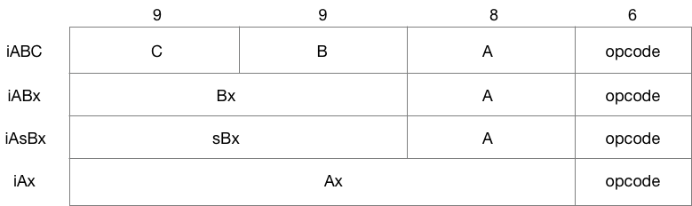

Introduction
Notes on the Implementation of Lua 5.3 is a collection of my notes on the Lua 5.3 source code. It's a mix of both high-level ideas and interesting details in the source code.
There can be errors. Feel free to contact me if you have any question or feedback.
What is Lua?
From lua.org:
Lua is a powerful, efficient, lightweight, embeddable scripting language. It supports procedural programming, object-oriented programming, functional programming, data-driven programming, and data description.
Lua combines simple procedural syntax with powerful data description constructs based on associative arrays and extensible semantics. Lua is dynamically typed, runs by interpreting bytecode with a register-based virtual machine, and has automatic memory management with incremental garbage collection, making it ideal for configuration, scripting, and rapid prototyping.
Lua has been used in many industrial applications (e.g., Adobe's Photoshop Lightroom ), with an emphasis on embedded systems (e.g., the Ginga middleware for digital TV in Brazil) and games (e.g., World of Warcraft and Angry Birds).
How to read this book
Reading code is personal. It's different from reading a book. It's trying to understand the design of a system. It's non-linear, tearing down, cross-referencing, experimenting, put it back together, and repeat.
This book is not a comprehensive, line-by-line explanation. This book is a tour guide. It's a companion, instead of a replacement, of your journey.
License
Notes on the Implementation of Lua 5.3 is licensed under CC BY-NC-SA 2.0.
Data Structure
Bad programmers worry about the code. Good programmers worry about data structures and their relationships. - Linus Torvalds
Let's get started with primitive Lua data types.
Value & TValue
Everything in Lua is a Value.
/*
** Union of all Lua values
*/
typedef union Value {
GCObject *gc; //* collectable objects *//
void *p; //* light userdata *//
int b; //* booleans *//
lua_CFunction f; //* light C functions *//
lua_Integer i; //* integer numbers *//
lua_Number n; //* float numbers *//
} Value;
Values are categorized into two types: collectible objects and others. Collectible Objects are subject to garbage collection, others are not.
The definition of GCObject is:
/*
** Common type for all collectable objects/
*/
typedef struct GCObject GCObject;
/*
** Common Header for all collectable objects (in macro form, to be
** included in other objects)
*/
#define CommonHeader GCObject *next; lu_byte tt; lu_byte marked
/*
** Common type has only the common header
*/
struct GCObject {
CommonHeader;
};
GCObject are chained together as a linked list. This makes the implementation of mark-and-sweep much simpler.
Instead of Value, TValue is used most of the time. It's just a Value and a type tag tt_.
#define TValuefields Value value_; int tt_
typedef struct lua_TValue {
TValuefields;
} TValue;
/*
** tags for Tagged Values have the following use of bits:
** bits 0-3: actual tag (a LUA_T* value)
** bits 4-5: variant bits
** bit 6: whether value is collectable
*/
#define BIT_ISCOLLECTABLE (1 << 6)
#define iscollectable(o) (rttype(o) & BIT_ISCOLLECTABLE)
#define rttype(o) ((o)->tt_)
The tag tt_ also indicates whether a value is collectible.
String
The definition of TString is
/*
** Header for string value; string bytes follow the end of this structure
** (aligned according to 'UTString'; see next).
*/
typedef struct TString {
CommonHeader;
lu_byte extra; /* reserved words for short strings; "has hash" for longs */
lu_byte shrlen; /* length for short strings */
unsigned int hash;
union {
size_t lnglen; /* length for long strings */
struct TString *hnext; /* linked list for hash table */
} u;
} TString;
/*
** Ensures that address after this type is always fully aligned.
*/
typedef union UTString {
L_Umaxalign dummy; /* ensures maximum alignment for strings */
TString tsv;
} UTString;
/* type to ensure maximum alignment */
typedef union {
lua_Number n;
double u;
void *s;
lua_Integer i;
long l;
} L_Umaxalign;
Note:
TStringcontains only the metadata of a string. There's no actual string body member defined in the struct.- There are two types of
TString: long string and short string. UTStringis defined to ensure maximum alignment.
Creating a String
To create a string, first, we check if the string already exist in the global string cache. Only create new string when it's not in the cache.
TString *luaS_new (lua_State *L, const char *str) {
unsigned int i = point2uint(str) % STRCACHE_N; /* hash */
int j;
TString **p = G(L)->strcache[i];
for (j = 0; j < STRCACHE_M; j++) {
if (strcmp(str, getstr(p[j])) == 0) /* hit? */
return p[j]; /* that is it */
}
/* normal route */
for (j = STRCACHE_M - 1; j > 0; j--)
p[j] = p[j - 1]; /* move out last element */
/* new element is first in the list */
p[0] = luaS_newlstr(L, str, strlen(str));
return p[0];
}
If the length of the string is greater than LUAI_MAXSHORTLEN, then it's a long string, else it's a short string
TString *luaS_newlstr (lua_State *L, const char *str, size_t l) {
if (l <= LUAI_MAXSHORTLEN) /* short string? */
return internshrstr(L, str, l);
else {
TString *ts;
if (l >= (MAX_SIZE - sizeof(TString))/sizeof(char))
luaM_toobig(L);
ts = luaS_createlngstrobj(L, l);
memcpy(getstr(ts), str, l * sizeof(char));
return ts;
}
}
It's straight forward to create a long string.
TString *luaS_createlngstrobj (lua_State *L, size_t l) {
TString *ts = createstrobj(L, l, LUA_TLNGSTR, G(L)->seed);
ts->u.lnglen = l;
return ts;
}
static TString *createstrobj (lua_State *L, size_t l, int tag, unsigned int h) {
TString *ts;
GCObject *o;
size_t totalsize; /* total size of TString object */
totalsize = sizelstring(l);
o = luaC_newobj(L, tag, totalsize);
ts = gco2ts(o);
ts->hash = h;
ts->extra = 0;
getstr(ts)[l] = '\0'; /* ending 0 */
return ts;
}
#define sizelstring(l) (sizeof(union UTString) + ((l) + 1) * sizeof(char))
Previously, we've noticed that TString does not store the string body as a struct member. Where does the string body actually go?
When we create a string, we allocate a slice of memory with length sizelstring(l), which is the size of TString and the size of the string body. This is a technique called flexible array member. The technique allows us to store the actual string body in the memory space following the TString.
note: C99 standardized flexible array member syntax. However, Lua stuck to ISO C for portability.
On the other hand, Short strings will be stored in the string table strt in the global state because:
strtis a hash table, which allows us to compare short strings efficiently with only their hash.- Avoid creating duplicated short strings.
- They can be managed with a separated
GCObjectlinked-list, which makes the GC process more efficient.
#define sizelstring(l) (sizeof(union UTString) + ((l) + 1) * sizeof(char))
static TString *internshrstr (lua_State *L, const char *str, size_t l) {
TString *ts;
global_State *g = G(L);
unsigned int h = luaS_hash(str, l, g->seed);
TString **list = &g->strt.hash[lmod(h, g->strt.size)];
lua_assert(str != NULL); /* otherwise 'memcmp'/'memcpy' are undefined */
for (ts = *list; ts != NULL; ts = ts->u.hnext) {
if (l == ts->shrlen &&
(memcmp(str, getstr(ts), l * sizeof(char)) == 0)) {
/* found! */
if (isdead(g, ts)) /* dead (but not collected yet)? */
changewhite(ts); /* resurrect it */
return ts;
}
}
if (g->strt.nuse >= g->strt.size && g->strt.size <= MAX_INT/2) {
luaS_resize(L, g->strt.size * 2);
list = &g->strt.hash[lmod(h, g->strt.size)]; /* recompute with new size */
}
ts = createstrobj(L, l, LUA_TSHRSTR, h);
memcpy(getstr(ts), str, l * sizeof(char));
ts->shrlen = cast_byte(l);
ts->u.hnext = *list;
*list = ts;
g->strt.nuse++;
return ts;
}
Table
In lua, a table is composed of 3 parts: TKey, Node, and Table.
/*
** Tables
*/
typedef union TKey {
struct {
TValuefields;
int next; /* for chaining (offset for next node) */
} nk;
TValue tvk;
} TKey;
typedef struct Node {
TValue i_val;
TKey i_key;
} Node;
typedef struct Table {
CommonHeader;
lu_byte flags; /* 1<<p means tagmethod(p) is not present */
lu_byte lsizenode; /* log2 of size of 'node' array */
unsigned int sizearray; /* size of 'array' array */
TValue *array; /* array part */
Node *node;
Node *lastfree; /* any free position is before this position */
struct Table *metatable;
GCObject *gclist;
} Table;
A Table is built by multiple Node. Every Node is a pair of TKey and TValue.
In the previous chapter, we know that the definition of TValue is:
typedef struct lua_TValue {
TValuefields;
} TValue;
However, this makes TKey looks unnecessarily complex. Why are we making a union on two TValuefields?
In fact, it's for better memory alignment. The size of a TValue can be larger than the size of its elements. The same technique is also used for Strings.
Array part and Hash part
Lua table is notorious for its duality between arrays and hashtables. The duality is also reflected in the implementation of Table. A quote from the comment in the source code:
Implementation of tables (aka arrays, objects, or hash tables).
Tables keep its elements in two parts: an array part and a hash part. Non-negative integer keys are all candidates to be kept in the array part. The actual size of the array is the largest 'n' such that more than half the slots between 1 and n are in use. Hash uses a mix of chained scatter table with Brent's variation. A main invariant of these tables is that, if an element is not in its main position (i.e. the 'original' position that its hash gives to it), then the colliding element is in its own main position. Hence even when the load factor reaches 100%, performance remains good.
The array part is for optimizing integer keys in the table. The rest of the keys is stored in the hash part. For example, if we want to look up for a integer key in a table:
/*
** search function for integers
*/
const TValue *luaH_getint (Table *t, lua_Integer key) {
/* (1 <= key && key <= t->sizearray) */
if (l_castS2U(key) - 1 < t->sizearray)
return &t->array[key - 1];
else {
Node *n = hashint(t, key);
for (;;) { /* check whether 'key' is somewhere in the chain */
if (ttisinteger(gkey(n)) && ivalue(gkey(n)) == key)
return gval(n); /* that's it */
else {
int nx = gnext(n);
if (nx == 0) break;
n += nx;
}
}
return luaO_nilobject;
}
}
We can see that if the size of the array part is larger than the key, we can return the value stored in the array part directly.
The design of Lua table makes it works like a mix between a normal array, sparse array, and hashtable, which makes Lua table well-equipped for all kinds of usage pattern.
Inserting a New Key
A key can be stored in the array part or the hash part. To maintain good performance, it's important to strike a balance between the usage of the array part and the hash part.
Here's the pseudo code of inserting a new key into a table:
1. If the new key is a float
1.1 if the key can be represented as an integer, convert it to integer
1.2 if the key is NaN, return an error
2. find the main position of the key
2.1 if the main position if occupied, check if the occupier is on its main position.
2.1.1 if the occupier is also on its main position, insert the new key to the free position
2.1.2 if the occupier is not on its main position, move the occupier to the free position and free the position we want.
2.1.3 if there's no free position available, invoke `rehash` to resize both the array part and the hash part.
And the code is:
/*
** inserts a new key into a hash table; first, check whether key's main
** position is free. If not, check whether colliding node is in its main
** position or not: if it is not, move colliding node to an empty place and
** put new key in its main position; otherwise (colliding node is in its main
** position), new key goes to an empty position.
*/
TValue *luaH_newkey (lua_State *L, Table *t, const TValue *key) {
Node *mp;
TValue aux;
if (ttisnil(key)) luaG_runerror(L, "table index is nil");
else if (ttisfloat(key)) {
lua_Integer k;
if (luaV_tointeger(key, &k, 0)) { /* does index fit in an integer? */
setivalue(&aux, k);
key = &aux; /* insert it as an integer */
}
else if (luai_numisnan(fltvalue(key)))
luaG_runerror(L, "table index is NaN");
}
mp = mainposition(t, key);
if (!ttisnil(gval(mp)) || isdummy(t)) { /* main position is taken? */
Node *othern;
Node *f = getfreepos(t); /* get a free place */
if (f == NULL) { /* cannot find a free place? */
rehash(L, t, key); /* grow table */
/* whatever called 'newkey' takes care of TM cache */
return luaH_set(L, t, key); /* insert key into grown table */
}
lua_assert(!isdummy(t));
othern = mainposition(t, gkey(mp));
if (othern != mp) { /* is colliding node out of its main position? */
/* yes; move colliding node into free position */
while (othern + gnext(othern) != mp) /* find previous */
othern += gnext(othern);
gnext(othern) = cast_int(f - othern); /* rechain to point to 'f' */
*f = *mp; /* copy colliding node into free pos. (mp->next also goes) */
if (gnext(mp) != 0) {
gnext(f) += cast_int(mp - f); /* correct 'next' */
gnext(mp) = 0; /* now 'mp' is free */
}
setnilvalue(gval(mp));
}
else { /* colliding node is in its own main position */
/* new node will go into free position */
if (gnext(mp) != 0)
gnext(f) = cast_int((mp + gnext(mp)) - f); /* chain new position */
else lua_assert(gnext(f) == 0);
gnext(mp) = cast_int(f - mp);
mp = f;
}
}
setnodekey(L, &mp->i_key, key);
luaC_barrierback(L, t, key);
lua_assert(ttisnil(gval(mp)));
return gval(mp);
}
There are many different hashtable implementations in the world. Lua chooses internal chained scatter table with Brent's variation for performance and efficiency.
To know more about the main position/free position and internal chained scatter table. I recommend you to check the references for more detail:
- The art of hashing
- R. P. Brent, Reducing the retrieval time of scatter storage techniques, Communications of the ACM 16 (1973), 105-109.
Balancing between the array part and the hash part
Finally, let's see the implement of rehash. rehash is responsible for keeping the balance between the array part and the hash part. The design is pretty simple and efficient.
First, a nums array is used to keep track of the number of integer keys in each interval i.
// nums[i] = number of keys 'k' where 2^(i - 1) < k <= 2^i
Then, rehash try to make sure the array part part contains at least half of all integer keys. Here's the pseudo code:
1. count keys in the array part, save to nums
2. count integer keys in the hash part, save to nums
3. count the number of non-interger keys
4. Find out the `nums` interval which contains half of the total keys, resize array part to fit the interval, the rest goes to the hash part.
and the actual implementation:
/*
** nums[i] = number of keys 'k' where 2^(i - 1) < k <= 2^i
*/
static void rehash (lua_State *L, Table *t, const TValue *ek) {
unsigned int asize; /* optimal size for array part */
unsigned int na; /* number of keys in the array part */
unsigned int nums[MAXABITS + 1];
int i;
int totaluse;
for (i = 0; i <= MAXABITS; i++) nums[i] = 0; /* reset counts */
na = numusearray(t, nums); /* count keys in array part */
totaluse = na; /* all those keys are integer keys */
totaluse += numusehash(t, nums, &na); /* count keys in hash part */
/* count extra key */
na += countint(ek, nums);
totaluse++;
/* compute new size for array part */
asize = computesizes(nums, &na);
/* resize the table to new computed sizes */
luaH_resize(L, t, asize, totaluse - na);
}
State
global_State and lua_State
There are two kinds of states a Lua VM keep track of while running: global_State and lua_State.
Each Lua VM has a global_State. It keeps the information about GC metadata, metatables, and string cache.
/*
** 'global state', shared by all threads of this state
*/
typedef struct global_State {
lua_Alloc frealloc; /* function to reallocate memory */
void *ud; /* auxiliary data to 'frealloc' */
l_mem totalbytes; /* number of bytes currently allocated - GCdebt */
l_mem GCdebt; /* bytes allocated not yet compensated by the collector */
lu_mem GCmemtrav; /* memory traversed by the GC */
lu_mem GCestimate; /* an estimate of the non-garbage memory in use */
stringtable strt; /* hash table for strings */
TValue l_registry;
unsigned int seed; /* randomized seed for hashes */
lu_byte currentwhite;
lu_byte gcstate; /* state of garbage collector */
lu_byte gckind; /* kind of GC running */
lu_byte gcrunning; /* true if GC is running */
GCObject *allgc; /* list of all collectable objects */
GCObject **sweepgc; /* current position of sweep in list */
GCObject *finobj; /* list of collectable objects with finalizers */
GCObject *gray; /* list of gray objects */
GCObject *grayagain; /* list of objects to be traversed atomically */
GCObject *weak; /* list of tables with weak values */
GCObject *ephemeron; /* list of ephemeron tables (weak keys) */
GCObject *allweak; /* list of all-weak tables */
GCObject *tobefnz; /* list of userdata to be GC */
GCObject *fixedgc; /* list of objects not to be collected */
struct lua_State *twups; /* list of threads with open upvalues */
unsigned int gcfinnum; /* number of finalizers to call in each GC step */
int gcpause; /* size of pause between successive GCs */
int gcstepmul; /* GC 'granularity' */
lua_CFunction panic; /* to be called in unprotected errors */
struct lua_State *mainthread;
const lua_Number *version; /* pointer to version number */
TString *memerrmsg; /* memory-error message */
TString *tmname[TM_N]; /* array with tag-method names */
struct Table *mt[LUA_NUMTAGS]; /* metatables for basic types */
TString *strcache[STRCACHE_N][STRCACHE_M]; /* cache for strings in API */
} global_State;
On the other hand, lua_State correspond to a Lua thread. The call stack of a given thread is also included in the corresponding lua_State.
/*
** 'per thread' state
*/
struct lua_State {
CommonHeader;
unsigned short nci; /* number of items in 'ci' list */
lu_byte status;
StkId top; /* first free slot in the stack */
global_State *l_G;
CallInfo *ci; /* call info for current function */
const Instruction *oldpc; /* last pc traced */
StkId stack_last; /* last free slot in the stack */
StkId stack; /* stack base */
UpVal *openupval; /* list of open upvalues in this stack */
GCObject *gclist;
struct lua_State *twups; /* list of threads with open upvalues */
struct lua_longjmp *errorJmp; /* current error recover point */
CallInfo base_ci; /* CallInfo for first level (C calling Lua) */
volatile lua_Hook hook;
ptrdiff_t errfunc; /* current error handling function (stack index) */
int stacksize;
int basehookcount;
int hookcount;
unsigned short nny; /* number of non-yieldable calls in stack */
unsigned short nCcalls; /* number of nested C calls */
l_signalT hookmask;
lu_byte allowhook;
};
Call stack
A call stack contains the information of an active subroutine. It's used to keep track of the point to which each subroutine should return control when it finishes executing.
Here's the figure showing how the stack is related to other Lua objects :
 source: Lua 5.3 Bytecode Reference
source: Lua 5.3 Bytecode Reference
While running, Lua VM maintains two stacks: a Callinfo stack and a TValue stack.
- The
Callinfostack keeps tracks of activation frames. - The
TValuestack stores the data needed by each subroutine, act as registers.
When a new lua_State is created, its stack is also initialized:
static void stack_init (lua_State *L1, lua_State *L) {
int i; CallInfo *ci;
/* initialize stack array */
L1->stack = luaM_newvector(L, BASIC_STACK_SIZE, TValue);
L1->stacksize = BASIC_STACK_SIZE;
for (i = 0; i < BASIC_STACK_SIZE; i++)
setnilvalue(L1->stack + i); /* erase new stack */
L1->top = L1->stack;
L1->stack_last = L1->stack + L1->stacksize - EXTRA_STACK;
/* initialize first ci */
ci = &L1->base_ci;
ci->next = ci->previous = NULL;
ci->callstatus = 0;
ci->func = L1->top;
setnilvalue(L1->top++); /* 'function' entry for this 'ci' */
ci->top = L1->top + LUA_MINSTACK;
L1->ci = ci;
}
- A
TValuearray is initialized with lengthBASIC_STACK_SIZE, filled withnil. - A
Callinfois created and pointed to the first frame in theTValuestack.
Here's the definition of Callstack:
typedef struct CallInfo {
StkId func; /* function index in the stack */
StkId top; /* top for this function */
struct CallInfo *previous, *next; /* dynamic call link */
union {
struct { /* only for Lua functions */
StkId base; /* base for this function */
const Instruction *savedpc;
} l;
struct { /* only for C functions */
lua_KFunction k; /* continuation in case of yields */
ptrdiff_t old_errfunc;
lua_KContext ctx; /* context info. in case of yields */
} c;
} u;
ptrdiff_t extra;
short nresults; /* expected number of results from this function */
unsigned short callstatus;
} CallInfo;
Bytecode
Lua uses 32-bit register-based instructions with the following possible format:

Most of the instructions are under the iABC format, with the following exceptions:
- iABx:
LOADK,LOADKX,CLOSURE - iAsBx:
JMP,FORLOOP,TFORLOOP - iAx:
EXTRAARG
The format of each instruction is defined in lopcode.c:
/*
** masks for instruction properties. The format is:
** bits 0-1: op mode
** bits 2-3: C arg mode
** bits 4-5: B arg mode
** bit 6: instruction set register A
** bit 7: operator is a test (next instruction must be a jump)
*/
enum OpArgMask {
OpArgN, /* argument is not used */
OpArgU, /* argument is used */
OpArgR, /* argument is a register or a jump offset */
OpArgK /* argument is a constant or register/constant */
};
#define opmode(t,a,b,c,m) (((t)<<7) | ((a)<<6) | ((b)<<4) | ((c)<<2) | (m))
LUAI_DDEF const lu_byte luaP_opmodes[NUM_OPCODES] = {
/* T A B C mode opcode */
opmode(0, 1, OpArgR, OpArgN, iABC) /* OP_MOVE */
,opmode(0, 1, OpArgK, OpArgN, iABx) /* OP_LOADK */
,opmode(0, 1, OpArgN, OpArgN, iABx) /* OP_LOADKX */
,opmode(0, 1, OpArgU, OpArgU, iABC) /* OP_LOADBOOL */
,opmode(0, 1, OpArgU, OpArgN, iABC) /* OP_LOADNIL */
,opmode(0, 1, OpArgU, OpArgN, iABC) /* OP_GETUPVAL */
,opmode(0, 1, OpArgU, OpArgK, iABC) /* OP_GETTABUP */
,opmode(0, 1, OpArgR, OpArgK, iABC) /* OP_GETTABLE */
// ...
References
Functions & Closures
In the source code, Lua Functions are called Closure. A Closure is composed of proto and UpVal.
- A
protois basically a function not yet bound toUpVal. protois generated at compile time.Closureis generated at runtime.- A
protocan generate multipleClosure.
The definition of proto.
/*
** Function Prototypes
*/
typedef struct Proto {
CommonHeader;
lu_byte numparams; /* number of fixed parameters */
lu_byte is_vararg;
lu_byte maxstacksize; /* number of registers needed by this function */
int sizeupvalues; /* size of 'upvalues' */
int sizek; /* size of 'k' */
int sizecode;
int sizelineinfo;
int sizep; /* size of 'p' */
int sizelocvars;
int linedefined; /* debug information */
int lastlinedefined; /* debug information */
TValue *k; /* constants used by the function */
Instruction *code; /* opcodes */
struct Proto **p; /* functions defined inside the function */
int *lineinfo; /* map from opcodes to source lines (debug information) */
LocVar *locvars; /* information about local variables (debug information) */
Upvaldesc *upvalues; /* upvalue information */
struct LClosure *cache; /* last-created closure with this prototype */
TString *source; /* used for debug information */
GCObject *gclist;
} Proto;
When parsing functions, Lua generate instructions with luaK_codeABx/luaK_codeABC, then collect them into a FuncState. A FuncState will be converted into a Proto after the parsing is finished.
If we compose a Proto and its corresponding UpVals, we get a Closure. There are two kinds of CLosure:
LClosureis implemented in LuaCClosureis implemented in C
/*
** Closures
*/
typedef int (*lua_CFunction) (lua_State *L);
#define ClosureHeader \
CommonHeader; lu_byte nupvalues; GCObject *gclist
typedef struct CClosure {
ClosureHeader;
lua_CFunction f;
TValue upvalue[1]; /* list of upvalues */
} CClosure;
typedef struct LClosure {
ClosureHeader;
struct Proto *p;
UpVal *upvals[1]; /* list of upvalues */
} LClosure;
typedef union Closure {
CClosure c;
LClosure l;
} Closure;
CClosure and LClosure both contain its upvalues and ClosureHeader. However, CClosure is just a function pointer and doesn't have a Proto.
With ClosureHeader, closures are also chained together into a linked-list for garbage collection.
Mechanic
Parsing & Compiling
To load and parse a Lua code:
- load the file with
luaL_dofile. luaL_dofilewill invokeluaL_loadfile,luaL_loadfilewill parse the Lua code and return generated bytecode.
The first step of parsing is to create Proto from chunks. A chunk is a valid lua code. lua_load will create a Proto mainfunc, then create a closure from the Proto, then put the closure to the top of the stack for further execution.
Functions defined in the chunk will also be converted into a Proto, forming a tree of Proto with mainfunc as the root.
Parser
The Lua Parser is not generated with a parser generator because:
- Lua has a high requirement for portability.
- The Lua parser needs to parse the source code and generate bytecodes in the same iteration for performance reason.
In the process, FuncState will be used to store the temporary state of a function. Every FuncState has a prev pointer point to its parent. Then, Lua will traverse the FuncState tree with DFS.
However, the DFS might not have enough information while traversing. (e.g. jumping to a function which is not yet defined). Lua can backfill these missing information to the traversed tree later.
Interpreter
luaV_execute is the main interpreter loop.
void luaV_execute (lua_State *L) {
CallInfo *ci = L->ci;
LClosure *cl;
TValue *k;
StkId base;
ci->callstatus |= CIST_FRESH; /* fresh invocation of 'luaV_execute" */
newframe: /* reentry point when frame changes (call/return) */
lua_assert(ci == L->ci);
cl = clLvalue(ci->func); /* local reference to function's closure */
k = cl->p->k; /* local reference to function's constant table */
base = ci->u.l.base; /* local copy of function's base */
/* main loop of interpreter */
for (;;) {
Instruction i;
StkId ra;
vmfetch();
vmdispatch (GET_OPCODE(i)) {
vmcase(OP_MOVE) {
// implementation of OP_MOVE
}
// other cases...
}
}
}
The implemented is simple: Fetch the next instruction with vmfetch and execute it.
An important detail is that register references, such as RA and RB, are based on relative position to the current stack position. Therefore, when stack re-allocation happened, all register pointers need to be invalidated.
/* fetch an instruction and prepare its execution */
#define vmfetch() { \
i = *(ci->u.l.savedpc++); \
if (L->hookmask & (LUA_MASKLINE | LUA_MASKCOUNT)) \
Protect(luaG_traceexec(L)); \
ra = RA(i); /* WARNING: any stack reallocation invalidates 'ra' */ \
lua_assert(base == ci->u.l.base); \
lua_assert(base <= L->top && L->top < L->stack + L->stacksize); \
}
Coroutine
Note: You might want to have a clear picture of how Lua coroutine works before reading this chapter.
Coroutine is one of the most powerful features of Lua. You can abstract away many convoluted asynchronous, multi-threaded code with clean and simple coroutines.
In Lua, a coroutine is actually a lua_State, tagged with LUA_TTHREAD.
LUA_API lua_State *lua_newthread (lua_State *L) {
global_State *g = G(L);
lua_State *L1;
lua_lock(L);
luaC_checkGC(L);
/* create new thread */
L1 = &cast(LX *, luaM_newobject(L, LUA_TTHREAD, sizeof(LX)))->l;
L1->marked = luaC_white(g);
L1->tt = LUA_TTHREAD;
/* link it on list 'allgc' */
L1->next = g->allgc;
g->allgc = obj2gco(L1);
/* anchor it on L stack */
setthvalue(L, L->top, L1);
api_incr_top(L);
preinit_thread(L1, g);
L1->hookmask = L->hookmask;
L1->basehookcount = L->basehookcount;
L1->hook = L->hook;
resethookcount(L1);
/* initialize L1 extra space */
memcpy(lua_getextraspace(L1), lua_getextraspace(g->mainthread),
LUA_EXTRASPACE);
luai_userstatethread(L, L1);
stack_init(L1, L); /* init stack */
lua_unlock(L);
return L1;
}
Creating a coroutine
Since lua_State is an encapsulated environment, we need a way to pass data between lua_States, just like how we pass data in Lua between coroutines.
The data passing is achieved with lua_xmove. It just simply copy n values on the stack from from to to.
LUA_API void lua_xmove (lua_State *from, lua_State *to, int n) {
int i;
if (from == to) return;
lua_lock(to);
api_checknelems(from, n);
api_check(from, G(from) == G(to), "moving among independent states");
api_check(from, to->ci->top - to->top >= n, "stack overflow");
from->top -= n;
for (i = 0; i < n; i++) {
setobj2s(to, to->top, from->top + i);
to->top++; /* stack already checked by previous 'api_check' */
}
lua_unlock(to);
}
We can create a coroutine with luaB_create. It works as follows:
- Make sure the value on the top of the stack is a function.
- create a new thread
NL. - Since the top of the stack is now
NL, put the function back to the top. - copy the function to
NLwithlua_xmove.
static int luaB_cocreate (lua_State *L) {
lua_State *NL;
luaL_checktype(L, 1, LUA_TFUNCTION);
NL = lua_newthread(L);
lua_pushvalue(L, 1); /* move function to top */
lua_xmove(L, NL, 1); /* move function from L to NL */
return 1;
}
Running a coroutine
It takes four functions to run a coroutine: luaB_coresume, auxresume, lua_resume, and finally resume.
static int luaB_coresume (lua_State *L) {
lua_State *co = getco(L);
int r;
r = auxresume(L, co, lua_gettop(L) - 1);
if (r < 0) {
lua_pushboolean(L, 0);
lua_insert(L, -2);
return 2; /* return false + error message */
}
else {
lua_pushboolean(L, 1);
lua_insert(L, -(r + 1));
return r + 1; /* return true + 'resume' returns */
}
}
static int auxresume (lua_State *L, lua_State *co, int narg) {
int status;
if (!lua_checkstack(co, narg)) {
lua_pushliteral(L, "too many arguments to resume");
return -1; /* error flag */
}
if (lua_status(co) == LUA_OK && lua_gettop(co) == 0) {
lua_pushliteral(L, "cannot resume dead coroutine");
return -1; /* error flag */
}
lua_xmove(L, co, narg);
status = lua_resume(co, L, narg);
if (status == LUA_OK || status == LUA_YIELD) {
int nres = lua_gettop(co);
if (!lua_checkstack(L, nres + 1)) {
lua_pop(co, nres); /* remove results anyway */
lua_pushliteral(L, "too many results to resume");
return -1; /* error flag */
}
lua_xmove(co, L, nres); /* move yielded values */
return nres;
}
else {
lua_xmove(co, L, 1); /* move error message */
return -1; /* error flag */
}
}
In auxresume:
- check the arguments
- check the state of coroutine
- invoke
lua_resume - if
lua_resumereturned successfully, copy the returned value to the caller withlua_xmove. If an error is returned, copy the returned error withlua_xmove.
// ldo.c
LUA_API int lua_resume (lua_State *L, lua_State *from, int nargs) {
int status;
unsigned short oldnny = L->nny; /* save "number of non-yieldable" calls */
lua_lock(L);
if (L->status == LUA_OK) { /* may be starting a coroutine */
if (L->ci != &L->base_ci) /* not in base level? */
return resume_error(L, "cannot resume non-suspended coroutine", nargs);
}
else if (L->status != LUA_YIELD)
return resume_error(L, "cannot resume dead coroutine", nargs);
L->nCcalls = (from) ? from->nCcalls + 1 : 1;
if (L->nCcalls >= LUAI_MAXCCALLS)
return resume_error(L, "C stack overflow", nargs);
luai_userstateresume(L, nargs);
L->nny = 0; /* allow yields */
api_checknelems(L, (L->status == LUA_OK) ? nargs + 1 : nargs);
status = luaD_rawrunprotected(L, resume, &nargs);
if (status == -1) /* error calling 'lua_resume'? */
status = LUA_ERRRUN;
else { /* continue running after recoverable errors */
while (errorstatus(status) && recover(L, status)) {
/* unroll continuation */
status = luaD_rawrunprotected(L, unroll, &status);
}
if (errorstatus(status)) { /* unrecoverable error? */
L->status = cast_byte(status); /* mark thread as 'dead' */
seterrorobj(L, status, L->top); /* push error message */
L->ci->top = L->top;
}
else lua_assert(status == L->status); /* normal end or yield */
}
L->nny = oldnny; /* restore 'nny' */
L->nCcalls--;
lua_assert(L->nCcalls == ((from) ? from->nCcalls : 0));
lua_unlock(L);
return status;
}
/*
** Do the work for 'lua_resume' in protected mode. Most of the work
** depends on the status of the coroutine: initial state, suspended
** inside a hook, or regularly suspended (optionally with a continuation
** function), plus erroneous cases: non-suspended coroutine or dead
** coroutine.
*/
static void resume (lua_State *L, void *ud) {
int n = *(cast(int*, ud)); /* number of arguments */
StkId firstArg = L->top - n; /* first argument */
CallInfo *ci = L->ci;
if (L->status == LUA_OK) { /* starting a coroutine? */
if (!luaD_precall(L, firstArg - 1, LUA_MULTRET)) /* Lua function? */
luaV_execute(L); /* call it */
}
else { /* resuming from previous yield */
lua_assert(L->status == LUA_YIELD);
L->status = LUA_OK; /* mark that it is running (again) */
ci->func = restorestack(L, ci->extra);
if (isLua(ci)) /* yielded inside a hook? */
luaV_execute(L); /* just continue running Lua code */
else { /* 'common' yield */
if (ci->u.c.k != NULL) { /* does it have a continuation function? */
lua_unlock(L);
n = (*ci->u.c.k)(L, LUA_YIELD, ci->u.c.ctx); /* call continuation */
lua_lock(L);
api_checknelems(L, n);
firstArg = L->top - n; /* yield results come from continuation */
}
luaD_poscall(L, ci, firstArg, n); /* finish 'luaD_precall' */
}
unroll(L, NULL); /* run continuation */
}
}
The real detail is in the resume function. It's pretty much the same as invoking a function:
- If the coroutine is brand new, invoke
luaD_precallto prepare the function.- invoke the function with
luaV_execute.
- invoke the function with
- If the coroutine is being resumed
- If we're inside a hook, execute it (to preserve the context of the hook?).
- If it's a normal resume, check whether there's a continuation function.
- if yes (it's a C function), resume from the continuation point
Kand yield the result.
- if yes (it's a C function), resume from the continuation point
- finished the
luaD_precallwithluaD_poscall. unrollthe rest and run the continuation.
Metatable
When initializing a Lua VM, LuaT_init will save all built-in metatable names to the global state tmname. These names won't be garbage-collected.
void luaT_init (lua_State *L) {
static const char *const luaT_eventname[] = { /* ORDER TM */
"__index", "__newindex",
"__gc", "__mode", "__len", "__eq",
"__add", "__sub", "__mul", "__mod", "__pow",
"__div", "__idiv",
"__band", "__bor", "__bxor", "__shl", "__shr",
"__unm", "__bnot", "__lt", "__le",
"__concat", "__call"
};
int i;
for (i=0; i<TM_N; i++) {
G(L)->tmname[i] = luaS_new(L, luaT_eventname[i]);
luaC_fix(L, obj2gco(G(L)->tmname[i])); /* never collect these names */
}
}
We can find metamethods of a given object with luaT_gettmbyobject. If the object is not a table or userdata, luaT_gettmbyobject will search directly from the global state metatable mt.
The real search work is in luaT_gettm. It will also cache the result to the object.
/*
** function to be used with macro "fasttm": optimized for absence of
** tag methods
*/
const TValue *luaT_gettm (Table *events, TMS event, TString *ename) {
const TValue *tm = luaH_getshortstr(events, ename);
lua_assert(event <= TM_EQ);
if (ttisnil(tm)) { /* no tag method? */
events->flags |= cast_byte(1u<<event); /* cache this fact */
return NULL;
}
else return tm;
}
#define gfasttm(g,et,e) ((et) == NULL ? NULL : \
((et)->flags & (1u<<(e))) ? NULL : luaT_gettm(et, e, (g)->tmname[e]))
#define fasttm(l,et,e) gfasttm(G(l), et, e)
const TValue *luaT_gettmbyobj (lua_State *L, const TValue *o, TMS event) {
Table *mt;
switch (ttnov(o)) {
case LUA_TTABLE:
mt = hvalue(o)->metatable;
break;
case LUA_TUSERDATA:
mt = uvalue(o)->metatable;
break;
default:
mt = G(L)->mt[ttnov(o)];
}
return (mt ? luaH_getshortstr(mt, G(L)->tmname[event]) : luaO_nilobject);
}
Let's take a look at an example of how we actually use metamethod __index:
/*
** Finish the table access 'val = t[key]'.
** if 'slot' is NULL, 't' is not a table; otherwise, 'slot' points to
** t[k] entry (which must be nil).
*/
void luaV_finishget (lua_State *L, const TValue *t, TValue *key, StkId val,
const TValue *slot) {
int loop; /* counter to avoid infinite loops */
const TValue *tm; /* metamethod */
for (loop = 0; loop < MAXTAGLOOP; loop++) {
if (slot == NULL) { /* 't' is not a table? */
lua_assert(!ttistable(t));
tm = luaT_gettmbyobj(L, t, TM_INDEX);
if (ttisnil(tm))
luaG_typeerror(L, t, "index"); /* no metamethod */
/* else will try the metamethod */
}
else { /* 't' is a table */
lua_assert(ttisnil(slot));
tm = fasttm(L, hvalue(t)->metatable, TM_INDEX); /* table's metamethod */
if (tm == NULL) { /* no metamethod? */
setnilvalue(val); /* result is nil */
return;
}
/* else will try the metamethod */
}
if (ttisfunction(tm)) { /* is metamethod a function? */
luaT_callTM(L, tm, t, key, val, 1); /* call it */
return;
}
t = tm; /* else try to access 'tm[key]' */
if (luaV_fastget(L,t,key,slot,luaH_get)) { /* fast track? */
setobj2s(L, val, slot); /* done */
return;
}
/* else repeat (tail call 'luaV_finishget') */
}
luaG_runerror(L, "'__index' chain too long; possible loop");
}
luaV_finishget will look for __index metamethod recursively through the metatables:
- If a function is found, call it with
luaT_callTM. - If a table is found, recursively search it with tail call
luaV_finishget. - The maximum number of iteration is limited by
MAXTAGLOOP.
Exceptions
Exceptions in Lua are emulated with LUAI_THROW, LUAI_TRY, and luai_jmpbuf.
Interestingly, if you compile Lua with a C++ compiler, standard C++ exceptions will be used. If a C compiler is used, they will be emulated with setjmp and longjmp.
/*
** LUAI_THROW/LUAI_TRY define how Lua does exception handling. By
** default, Lua handles errors with exceptions when compiling as
** C++ code, with _longjmp/_setjmp when asked to use them, and with
** longjmp/setjmp otherwise.
*/
#if !defined(LUAI_THROW) /* { */
#if defined(__cplusplus) && !defined(LUA_USE_LONGJMP) /* { */
/* C++ exceptions */
#define LUAI_THROW(L,c) throw(c)
#define LUAI_TRY(L,c,a) \
try { a } catch(...) { if ((c)->status == 0) (c)->status = -1; }
#define luai_jmpbuf int /* dummy variable */
#elif defined(LUA_USE_POSIX) /* }{ */
/* in POSIX, try _longjmp/_setjmp (more efficient) */
#define LUAI_THROW(L,c) _longjmp((c)->b, 1)
#define LUAI_TRY(L,c,a) if (_setjmp((c)->b) == 0) { a }
#define luai_jmpbuf jmp_buf
#else /* }{ */
/* ISO C handling with long jumps */
#define LUAI_THROW(L,c) longjmp((c)->b, 1)
#define LUAI_TRY(L,c,a) if (setjmp((c)->b) == 0) { a }
#define luai_jmpbuf jmp_buf
#endif /* } */
#endif /* } */
An errorjmp is defined in Lua state. It's a linked-list for recording a series of jump location of the current error.
/* chain list of long jump buffers */
struct lua_longjmp {
struct lua_longjmp *previous;
luai_jmpbuf b;
volatile int status; /* error code */
};
// error codes
/* thread status */
#define LUA_OK 0
#define LUA_YIELD 1
#define LUA_ERRRUN 2
#define LUA_ERRSYNTAX 3
#define LUA_ERRMEM 4
#define LUA_ERRGCMM 5
#define LUA_ERRERR 6
lua_longjmp is used in the luaD_rawrunprotected:
int luaD_rawrunprotected (lua_State *L, Pfunc f, void *ud) {
unsigned short oldnCcalls = L->nCcalls;
struct lua_longjmp lj;
lj.status = LUA_OK;
lj.previous = L->errorJmp; /* chain new error handler */
L->errorJmp = &lj;
LUAI_TRY(L, &lj,
(*f)(L, ud);
);
L->errorJmp = lj.previous; /* restore old error handler */
L->nCcalls = oldnCcalls;
return lj.status;
}
luaD_rawrunprotected is used in the luaD_pcall.
int luaD_pcall (lua_State *L, Pfunc func, void *u,
ptrdiff_t old_top, ptrdiff_t ef) {
int status;
CallInfo *old_ci = L->ci;
lu_byte old_allowhooks = L->allowhook;
unsigned short old_nny = L->nny;
ptrdiff_t old_errfunc = L->errfunc;
L->errfunc = ef;
status = luaD_rawrunprotected(L, func, u);
if (status != LUA_OK) { /* an error occurred? */
StkId oldtop = restorestack(L, old_top);
luaF_close(L, oldtop); /* close possible pending closures */
seterrorobj(L, status, oldtop);
L->ci = old_ci;
L->allowhook = old_allowhooks;
L->nny = old_nny;
luaD_shrinkstack(L);
}
L->errfunc = old_errfunc;
return status;
}
Garbage Collection
The most important aspect of GC is its design and trade-off. There's no "best GC" in the world.
In this chapter, we will focus on the high-level concept of Lua's GC. For more detail, check references
History of Lua's GC
mark-and-sweep
Before Lua 5.0, a simple mark-and-sweep is used by Lua. The idea is simple: Traverse all objects from the root, mark all visited object and release the un-visitable.
However, mark-and-sweep suffers from the stop-the-world, non-incremental algorithm. You have to check all objects at once, and the object tree can't be modified while the marking process is running. The performance is also proportional to the memory usage: More memory you use, Slower the GC will perform.
incremental GC
Lua 5.1 employed an incremental GC. Incremental GC is based on the idea of the mutator: From the perspective of a garbage collector, the program is just an outside who keep changing the memory. If we can keep track of which memory location is changed by the program, we don't have to check the whole memory every single time.
At the moment, Lua implemented tri-color marking. The algorithm can reduce GC latency. However, the cost of allocation and space-cost is increased.
(abandoned) generational GC
Lua 5.2 tried to switch to a generator GC. Unfortunately, it's reverted in Lua 5.3 due to some bug and naive implementation.
Lua 5.4?
Lua 5.4-work1 re-implemented a generational GC. Since everything is still in flux, we won't go into the detail.
The timing of Lua's GC
Lua GC is not based on wall-clock. It's based on your memory allocation: It checks the memory usage everything you allocate new memory.
The Pace of a Garbage Collector
A pace is the frequency of execution of a garbage collector.
- high pace: low memory overhead, high CPU overhead.
- low pace: high memory overhead, low CPU overhead.
References
Others
no-op macro
In the code, lua_assert, lua_lock, and lua_unlock are defined as (void)0, which is essentially a no-op. Why?
It's because:
- Vanilla Lua is pure ANSI C and runs on a single thread. So we don't need
lockandunlock. - Lua is designed to be ported to many different platforms. Porters can customize the behavior of Lua by overriding these macros. For example, you might need some form of
GILlike Python if you want multi-threading.
You need to implement your own assert mechanism if you want to debug the internal of Lua
References
References
Many people already walked through Lua's source code and wrote down their notes. This book won't be possible without them.